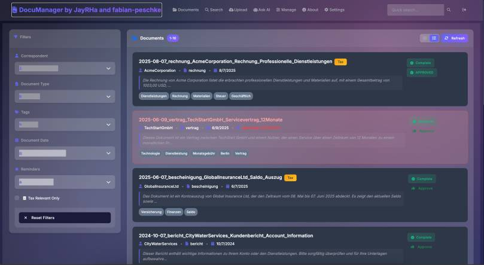
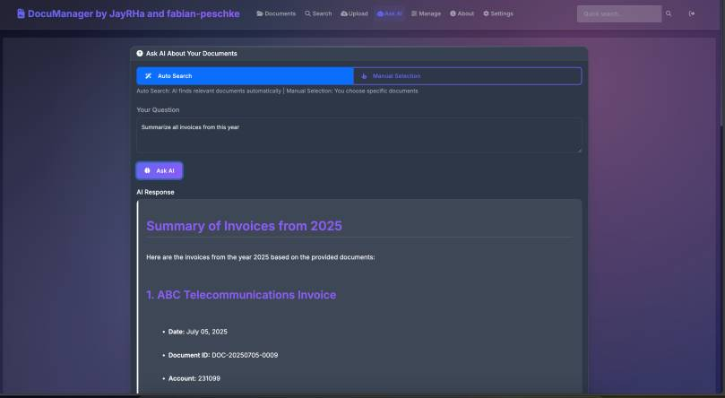
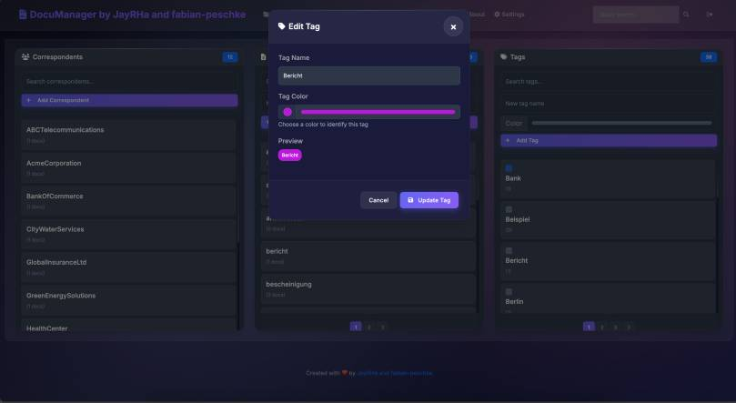
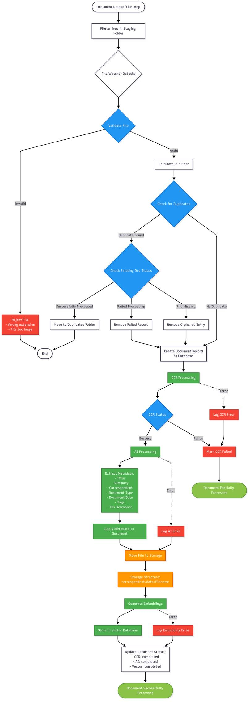

This post documents how I built an AI Document Manager with Azure OpenAI to power Paperless Offices at home and at work. It is the same project I run for my own household paperwork: scan, classify, extract, file, and search — using Azure AI Foundry and OpenAI models as the core.
Let’s be honest: most document management systems feel like they’re stuck in 2005. I decided to move to a paperless office and scan all my documents. I tried multiple ways to realize this, but I couldn’t find tooling that I felt comfortable with and that saved me a lot of work storing and retrieving documents.
I wouldn’t be a developer or an AI MVP if I didn’t get stuck in and write my own tool. With Doc Manager, I demonstrate how to use Azure OpenAI / AI Foundry to build a best-in-class document management system, building on ideas like Azure AI Search for AI-powered search.

Enter AI: The Game Changer
What if your document system actually understood your documents? Not just their titles or tags, but their actual content and meaning? That’s exactly what I set out to build with DocumentManager.
The document manager has a vector database behind it to provide an advanced search that finds all your documents based on content understanding. Instead of matching keywords, the system understands concepts. Search for “payment terms” and it’ll find documents discussing invoicing, contracts with payment clauses, and financial agreements – even if they never use those exact words. During the initialization of all documents, an embedding is generated for each of them to use for a vector search.

Key Features That Actually Matter
1. Smart OCR with Multi-Language Support
Upload a scanned PDF in German? No problem. A photo of a whiteboard in Japanese? Got it covered. The system automatically extracts text from images and PDFs in over 50 languages using Tesseract OCR.

2. Natural Language Queries
Stop thinking like a database. Just ask questions naturally. There is an AI chat integrated which finds all the relevant documents and lets you chat with them — similar in concept to the Intune Co Pilot I built with Azure OpenAI Studio:
- “Show me all contracts expiring this year”
- “Find documents about the Berlin office renovation”
- “What were our Q4 marketing expenses?”
The AI understands context and intent, not just keywords.

3. Automatic Categorization
Upload a document and watch the AI automatically tag it based on content. Financial reports get tagged as “finance”, contracts as “legal”, technical specs as “engineering”. No manual tagging required (though you can always override if needed). Also, the Title, Summary, Correspondent, Document Type, Document Date, Tags and Tax Relevance are detected or auto-generated. The AI-generated summary makes it very easy to understand the content, even for large documents.

The Technical Stack
For the tech-curious among you, here’s what’s under the hood:
- **Backend**: FastAPI
- **Vector Database**: ChromaDB for lightning-fast semantic search
- **AI Models**: OpenAI or Azure OpenAI (your choice)
- **Frontend**: Vanilla JavaScript (keeping it simple and fast)
- **Deployment**: Docker-ready with a handy setup script
Getting Started in 3 Minutes
The beauty of open source? You can have this running on your machine right now:
Make sure Docker is running on your device.
That’s it. Visit `http://localhost:8000` and start uploading documents.
Security First
I know what you’re thinking – “AI and sensitive documents?” Don’t worry, I’ve got you covered:
- Role-based access control (RBAC)
- Complete audit trails
- Option to use Azure OpenAI to keep the models in your own tenant
- All data stays on your infrastructure / storage
How does it work

The Open Source Advantage
Why open source? Because your document management system shouldn’t be a black box. You can:
- Audit the code
- Customize for your needs
- Self-host everything
- Contribute improvements
Plus, no vendor lock-in. Your documents, your rules. If you want to support the project, you can buy me a coffee. You can see it on the sidebar of my blog.
What’s Next?
The foundation is solid, but I’m just getting started. The roadmap includes:
- Support self-hosted models
- Mobile apps for on-the-go access or for scanning
- Workflow automation (imagine documents routing themselves)
- Advanced analytics dashboards
- Plugin system for custom integrations
Try It Yourself
Ready to transform your document chaos into organized intelligence? The entire project is available on GitHub.
Star the repo ⭐ if you find it useful – it really helps with motivation.
DocumentManager is open-source and available under the MIT license. Built with ❤️ by Jannik Reinhard and Fabian Peschke
Need AI in your processes? Need an agent or a tool like this? Message me through the contact form—happy to help.